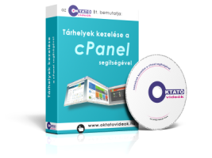

Tárhelyek kezelése a cPanel segítségével:
Ebben az oktatóanyagban mutatjuk be, hogy hogyan tudsz egy saját domain nevet (godaddy.com) illetve tárhelyet lefoglalni (tarhelydomain.com, havidíjas), és a tárhelyedet hogyan tudod a cPanel kezelőfelületével egyszerűen karbantartani.
Az előadások címei:
- 1. lecke - Domain név foglalása (18:19)
- 2. lecke - cPanel tárhely foglalása (12:17)
- 3. lecke - A tárhely beállításai, belépés a cPanel-re (11:15)
- 4. lecke - A cPanel áttekintése, stílus beállítása (09:50)
- 5. lecke - A cPanel nyelvének átállítása (03:36)
- 6. lecke - A jelszó megváltoztatása (07:01)
- 7. lecke - Kapcsolattartási információk (02:48)
- 8. lecke - E-mail postafiókok kezelése (09:35)
- 9. lecke - Webmail: e-mail kezelés webes felületen (19:43)
- 10. lecke - Az alapértelmezett (gyűjtő-) e-mail cím beállítása (10:53)
- 11. lecke - E-mail továbbítások beállítása (09:25)
- 12. lecke - Automatikus válaszlevelek beállítása (07:03)
- 13. lecke - E-mail szűrők kezelése (12:14)
- 14. lecke - A Box-trapper használata (20:22)
- 15. lecke - A SPAM-szűrő beállításai (07:14)
- 16. lecke - A webes fájlkezelő használata (14:26)
- 17. lecke - FTP-fiókok kezelése és FTP-programok használata (17:42)
- 18. lecke - Biztonsági mentések készítése (12:58)
- 19. lecke - Jelszóval védett könyvtárak (13:52)
- 20. lecke - Képek és egyéb fájlok védelme (09:30)
- 21. lecke - MySQL adatbázisok és felhasználók kezelése (11:58)
- 22. lecke - A phpMyAdmin használata (13:05)
- 23. lecke - Domain név parkolás (05:31)
- 24. lecke - Subdomain-ek (al-domain) kezelése (09:10)
- 25. lecke - Add-on domain-ek kezelése (15:26)
- 26. lecke - Hibaüzenetek átszerkesztése (20:38)
- 27. lecke - Statisztikák és logok megjelenítése (05:34)
- 28. lecke - Sikertelen jelszómegadási kísérletek miatti letiltás (06:37)